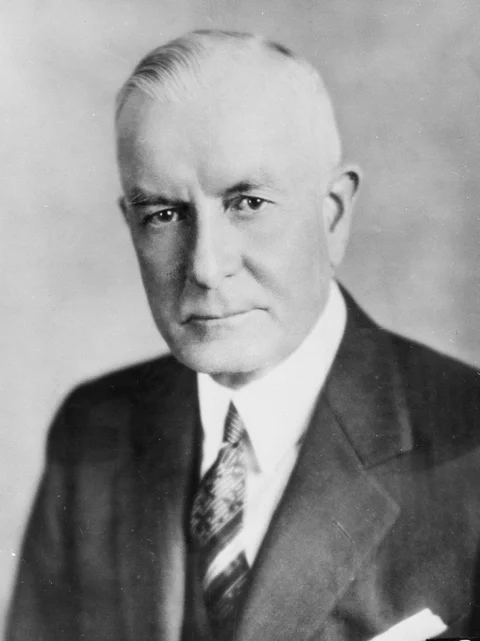

Thomas J.Watson
The Watson Fellowship is a rare window after college and pre-career to engage your deepest interest on a global scale. Fellows conceive original projects, execute them outside of the United States for one year and embrace the ensuing journey. They decide where to go, who to meet and when to change course. They do not affiliate with academic institutions and may not hold formal employment.

- Home
- Biography
- About
- Contact
- Home
- Biography
- About
- Contact
| Year |
Education |
2000-2004 |
Ideal Model School |
About Thomas